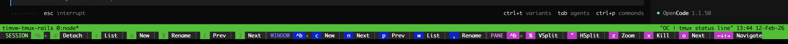

Tmux Training Wheels: A Zellij-Inspired Shortcut Hints Bar
I’ve been using tmux since around 2010, after years of working with GNU Screen. Tmux itself has been around since 2007, and over the years its shortcuts have become second nature to me. But I’ve noticed that when colleagues see my terminal setup and want to try tmux themselves, the keyboard shortcuts are the first barrier. They end up with a cheat sheet pinned to their monitor or open in a browser tab, constantly context-switching away from the terminal.
Recently I gave Zellij a try and immediately noticed its always-visible shortcut hints bar at the bottom of the screen. It’s a small thing, but it removes the need for an external reference entirely. I thought: why not bring that same idea to tmux?
The Idea: Training Wheels for Tmux
The concept is simple: use tmux’s second status line to display a color-coded bar showing the most common shortcuts, grouped by category:
- Green for session operations (detach, list, new, rename)
- Blue for window operations (new, next, prev, list, rename)
- Magenta for pane operations (split, zoom, kill, navigate)
Think of it as training wheels. Newcomers keep them on while learning, and once the shortcuts become muscle memory, they toggle them off with a single keybinding.

How It Works
Tmux supports multiple status lines via set -g status 2. The first line is the default status bar showing windows. The second line is where the hints bar lives, using status-format[1] to render the color-coded shortcuts.
The config also includes a toggle keybinding: prefix + h (Ctrl+b h) switches between single and double status lines, so the hints bar can be hidden once shortcuts become muscle memory.
The full, commented ~/.tmux.conf is available as a GitHub Gist – it explains the format pattern, color coding, and separators inline. Copy it, adjust to taste, and reload with:
tmux source-file ~/.tmux.conf
Making It Your Own
This configuration is a starting point. A few ideas for customization:
- Add more shortcuts: Include copy-mode bindings or custom keybindings you’ve defined
- Change colors: Pick colors that match your terminal theme
- Reorganize categories: Group by frequency of use instead of tmux’s conceptual model
- Add a custom session keybinding: The
bind-key aline above addsprefix + ato create a new named session, which is much faster than the defaultprefix + :followed by typingnew-session
Conclusion
Tmux has been around since 2007 and remains one of the most powerful terminal multiplexers available. But its keyboard-driven interface has a real learning curve, especially for people coming from GUI-based terminals. By borrowing Zellij’s idea of an always-visible hints bar, newcomers get a built-in reference right where they need it, without leaving the terminal.
The prefix + h toggle means the bar is never permanent. It’s training wheels you remove when you’re ready.